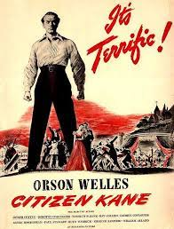
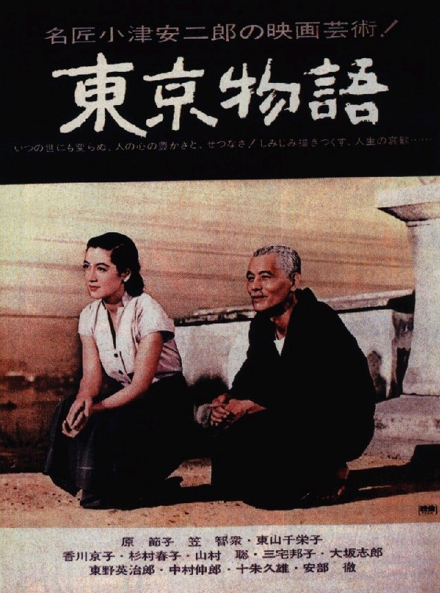
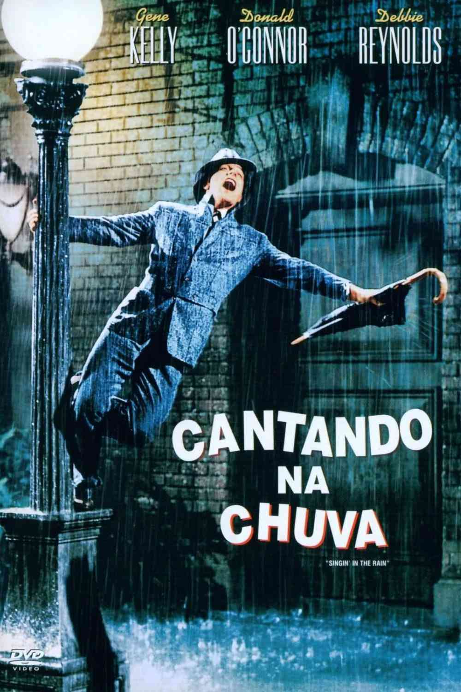

Melhores Filmes da História do Cinema
| Posição | Filme | Ano | Descrição | Trailer |
|---|---|---|---|---|
| 1º | Jeanne Dielman |
1975 | Três dias na vida de Jeanne Dielman (Delphine Seyrig), uma mulher ainda jovem, porém viúva, que mora com o filho adolescente. A rotina enfadonha e a clareza de pequenos gestos e detalhes dessa mulher que cuida da casa enquanto o filho está na escola e se prostitui ocasionalmente. A junção do sufocamento pela rotina com o fato dela atender aos clientes em casa conduzem Jeanne a um trágico final. | Assista Aqui |
| 2º | Um Corpo que Cai |
1958 | Em São Francisco, o detetive aposentado John ‘Scottie’ Ferguson sofre de um terrível medo de alturas. Certo dia, encontra com um antigo conhecido, dos tempos de faculdade, que pede que ele siga sua esposa, Madeleine Elster. John aceita a tarefa e fica encarregado da mulher, seguindo-a por toda a cidade. Ela demonstra uma estranha atração por lugares altos, levando o detetive a enfrentar seus piores medos. Ele começa a acreditar que a mulher é louca, com possíveis tendências suicidas, quando algo estranho acontece nesta missão. | Assista Aqui |
| 3º | Cidadão Kane  |
1941 | O longa conta a ascensão de um mito da imprensa americana. De garoto pobre no interior a magnata de um império do jornalismo e da publicidade mundial. Inspirado na vida do milionário William Randolph Hearst. | Assista Aqui |
| 4º | Era Uma Vez Tókio  |
1953 | Um casal de idosos deixa sua filha no campo para visitar os outros filhos em Tóquio, cidade que eles nunca tinham ido. Porém os filhos os recebem com indiferença, e estão sempre muito atarefados para terem tempo para os pais. Apenas a nora deles, que perdeu o marido na guerra, parece dar atenção aos dois. Quando a mãe fica doente, os filhos vão visitá-la junto com a nora, e complexos sentimentos são revelados. | Assista Aqui |
| 5º | Amor À Flor da Pele |
2000 | Ambientado em Hong Kong no início dos anos 60, dois vizinhos, Sr. Chow e Sra. Chan, criam um vínculo depois de começarem a suspeitar que seus respectivos cônjuges estão tendo um caso juntos. | Assista Aqui |
| 6º | 2001: Uma Odisseia no Espaço |
1968 | Desde a “Aurora do Homem” (a pré-história), um misterioso monolito negro parece emitir sinais de outra civilização interferindo no nosso planeta. Quatro milhões de anos depois, no século XXI, uma equipe de astronautas liderados pelo experiente David Bowman e Frank Poole é enviada à Júpiter para investigar o enigmático monolito na nave Discovery, totalmente controlada pelo computador HAL 9000. Entretanto, no meio da viagem HAL entra em pane e tenta assumir o controle da nave, eliminando um a um os tripulantes. | Assista Aqui |
| 7º | Bom Trabalho |
1998 | A diversa Legião Estrangeira da França, formada por homens de todas as raças e cores, está sendo submetida a um rigoroso treinamento na África. Debaixo do céu azul e claro e no meio do deserto, o sargento Galoup entrega toda sua devoção ao enigmático comandante Bruno. Quando o novo recruta Guilles Sentain chega, Galoup é consumido pelo ciúmes, o que o levará a cometer uma grande besteira. | Assista Aqui |
| 8º | Cidade dos Sonhos |
2001 | Um acidente automobilístico na estrada Mulholland Drive, em Los Angeles, dá início a uma complexa trama que envolve diversos personagens. Rita escapa da colisão, mas perde a memória e sai do local rastejando para se esconder em um edifício residencial que é administrado por Coco. É nesse mesmo prédio que vai morar Betty, uma aspirante a atriz recém-chegada à cidade que conhece Rita e tenta ajudar a nova amiga a descobrir sua identidade. Em outra parte da cidade o cineasta Adam Kesher, após ser espancado pelo amante da esposa, é roubado pelos sinistros irmãos Castigliane. | Assista Aqui |
| 9º | Um Homem com Uma Câmera |
1929 | Parte documentário, parte cinema, este filme acompanha uma cidade na União Soviética da década de 20, do dia até a noite. Com direção de Dziga Vertov, uma variedade de filmagens inovadoras e complexas retrata cenas do cotidiano na Rússia, celebrando a modernidade da cidade. | Assista Aqui |
| 10º | Cantando na Chuva  |
1951 | Gene Kelly é Don Lockwood, dançarino e ator, galã dos filmes de romance e paixão, o ídolo das matinês. Mas, na vida real, seu relacionamento com a atriz com a qual contracena, Lina Lamont (Jean Hagen), não vai bem. Ele prefere a companhia da aspirante à atriz Kathy Selden (Debbie Reynolds), que conheceu enquanto escapava de suas fãs. Em uma época em que os filmes mudos estão dando lugar ao cinema falado, Cantando na Chuva mostra essa transição com muito humor, diversão e números musicais que marcaram a história do cinema em seus tempos áureos. Considerado pelo American Film Institute um dos dez melhores filmes de todos os tempos. | Assista Aqui |